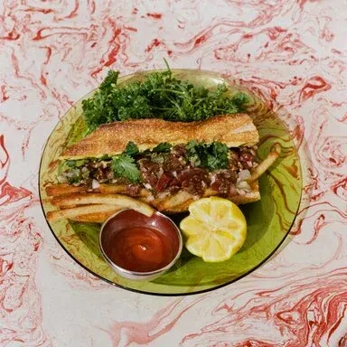
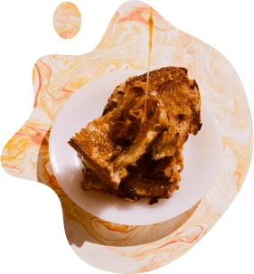
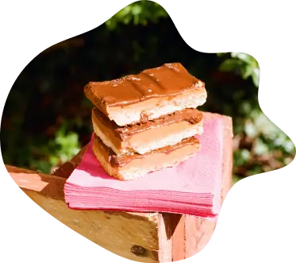

Toute l'année, nous suivons le rythme de la terre et ses
saisons. Des produits français dans la mesure du possible et
venant de nos fournisseurs, le Zingam, Borniambuc, les Vergers
Saint Eustache, Huguenin, etc. Pour le reste (comme les
agrumes), ce sera des produits issus d'une agriculture
européenne raisonnée. On veut respecter la planète et dans le
bon sens. Quand on s'occupe d'un légume, d'un fruit ou d'un
morceau de viande c'est entièrement.

Peu de plastique autant que possible.
Du packaging
recyclable mais si vous venez avec vos contenants ça sera encore
mieux.
Pas de carte précise à vous montrer ici. Mais des
exemples.
Les œufs, la mayo et le jambon nous en avons tout
le temps.
Le bourguignon c'est plutôt pour l'hiver quand il
fait froid.
Le fameux BLT (bacon/laitue/tomate) vous le
croiserez seulement en été.

Faire fondre du fromage sur du pain au levain, ça, on peut le
faire tous les jours. Pour les fêtes, on fera des sandwichs
super spéciaux pour s'enjailler. Bref, certains seront vos
acolytes du quotidien et d'autres ne seront que de passage.
Avec ou sans viande, avec ou sans œuf, tout est
possible.
On peut enlever ou ajouter des ingrédients, le seul qui reste
c'est celui du plaisir. Au final, chez Sandwichette, dans un
sandwich on trouve de la sauce, du croquant, du fondant, de
l'acidité et des fois du coulant. Pour le sucré, il reste
toujours de la place. Des goûts qui rappellent les sorties au
square du mercredi après-midi. Sandwichette, c'est l'odeur du
fait maison sans prise de tête.
